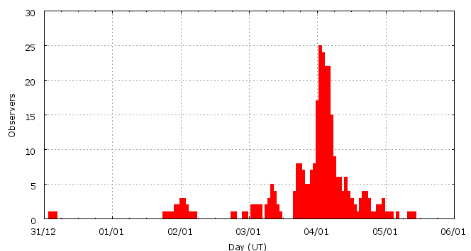

This page shows automated results of the Quadrantids 2008, based on visual data entered through the IMO electronic report form. Send your feedback regarding this page to Geert Barentsen or visit the project pages. Note that these automated results may not be suitable for scientific use!
Page generated: 2008 March 29 at 15:03 UT.
ZHRmax = 82 based on 2588 Quadrantids in 505 data intervals, assuming fixed population index r = 2.0 and zenith correction 1/sin(hR).

| Time (UT) | Solarlon | nINT | nQUA | ZHR | |
|---|---|---|---|---|---|
| 2007-12-31 03:52 | 278.964 | 7 | 1 | 2 | +-1 |
| 2008-01-02 01:23 | 280.897 | 40 | 21 | 5 | +-1 |
| 2008-01-03 01:19 | 281.913 | 11 | 19 | 11 | +-2 |
| 2008-01-03 09:53 | 282.277 | 23 | 24 | 8 | +-2 |
| 2008-01-03 18:08 | 282.628 | 12 | 24 | 11 | +-2 |
| 2008-01-03 19:35 | 282.689 | 6 | 32 | 29 | +-5 |
| 2008-01-03 20:45 | 282.739 | 5 | 34 | 36 | +-6 |
| 2008-01-03 22:01 | 282.793 | 5 | 28 | 29 | +-5 |
| 2008-01-03 23:11 | 282.842 | 8 | 59 | 39 | +-5 |
| 2008-01-04 00:22 | 282.892 | 15 | 107 | 46 | +-4 |
| 2008-01-04 01:15 | 282.930 | 35 | 180 | 42 | +-3 |
| 2008-01-04 02:21 | 282.977 | 52 | 316 | 56 | +-3 |
| 2008-01-04 03:19 | 283.018 | 55 | 405 | 54 | +-3 |
| 2008-01-04 04:18 | 283.060 | 59 | 452 | 57 | +-3 |
| 2008-01-04 05:14 | 283.099 | 39 | 308 | 58 | +-3 |
| 2008-01-04 06:29 | 283.152 | 15 | 67 | 44 | +-5 |
| 2008-01-04 07:35 | 283.199 | 9 | 37 | 65 | +-11 |
| 2008-01-04 08:38 | 283.244 | 30 | 109 | 77 | +-7 |
| 2008-01-04 09:36 | 283.285 | 28 | 102 | 82 | +-8 |
| 2008-01-04 10:39 | 283.329 | 14 | 104 | 75 | +-7 |
| 2008-01-04 11:48 | 283.378 | 5 | 57 | 52 | +-7 |
| 2008-01-04 12:49 | 283.421 | 5 | 25 | 18 | +-4 |
| 2008-01-04 14:36 | 283.497 | 5 | 22 | 26 | +-5 |
| 2008-01-04 17:18 | 283.612 | 8 | 21 | 24 | +-5 |
| 2008-01-04 23:27 | 283.873 | 11 | 24 | 12 | +-2 |
| 2008-01-05 09:55 | 284.317 | 3 | 10 | 14 | +-4 |
For each estimation interval: time is the middle of the interval, nINT is the number of observing periods and nQUA is the number of Quadrantids involved. ZHR = (1 + sum nQUA) / sum(Teff/C) where Teff is the effective observing time and C is the total correction for limiting magnitude, clouds and zenith correction. The solar longitudes refer to equinox J2000.0.
Data has been received from 65 observers in 19 countries. Thank you for your efforts!


| Observer | Country | Teff | nQUA |
|---|---|---|---|
| Salvador Aguirre | Mexico | 8.00h | 17 |
| Rainer Arlt | Germany | 1.65h | 74 |
| Pierre Bader | Germany | 3.58h | 112 |
| Felix Bettonvil | Netherlands | 2.64h | 52 |
| Simiao Cheng | China | 1.55h | 8 |
| Marcin Chwala | Poland | 4.17h | 73 |
| Mark Davis | United States | 3.15h | 71 |
| Peter Detterline | United States | 1.85h | 13 |
| Sietse Dijkstra | Netherlands | 6.75h | 12 |
| Irena Divisova | Czech Republic | 6.00h | 7 |
| Sergey Dobrowsky | Belarus | 3.67h | 17 |
| Ted Dunphy | Canada | 1.91h | 22 |
| Jaroslaw Dygos | Poland | 2.00h | 2 |
| Shlomi Eini | Israel | 0.25h | 7 |
| Frank Enzlein | Germany | 1.75h | 58 |
| Ling Feng | China | 2.50h | 4 |
| Stela Frencheva | Bulgaria | 1.25h | 63 |
| Arnold Gentz | Romania | 2.16h | 53 |
| William Godley | United States | 2.49h | 39 |
| Paul Gray | Canada | 2.00h | 31 |
| Wayne T. Hally | United States | 4.83h | 47 |
| Vilem Heblik | Czech Republic | 8.41h | 63 |
| Petr Horalek | Czech Republic | 1.31h | 32 |
| Sorin Hotea | Romania | 2.85h | 96 |
| Antal Igaz | Hungary | 2.36h | 45 |
| Andrey Igoshev | Russia | 1.00h | 17 |
| Andre Knofel | Germany | 2.51h | 74 |
| Aleksey Kobets | Israel | 0.41h | 13 |
| Katsuyuki Kobayashi | Japan | 1.00h | 4 |
| Jakub Koukal | Czech Republic | 24.42h | 77 |
| Richard Kramer | United States | 0.68h | 3 |
| Richard Kramer | United States | 0.72h | 1 |
| Peter Van Leuteren | Netherlands | 3.18h | 10 |
| Anna S. Levina | Israel | 0.50h | 19 |
| Alister Ling | Canada | 3.25h | 45 |
| Alister Ling | Canada | 1.25h | 11 |
| Xin Li | China | 1.08h | 7 |
| Pierre Martin | Canada | 1.63h | 60 |
| Bruce Mccurdy | Canada | 6.00h | 92 |
| Sven Nather | Germany | 2.00h | 83 |
| Duc Thien Ngo | Vietnam | 3.50h | 55 |
| Tereza Novotna | Czech Republic | 2.00h | 27 |
| Aleksandr Pobiakha | Belarus | 1.09h | 8 |
| Krzysztof Polakowski | Poland | 11.00h | 167 |
| Jurgen Rendtel | Germany | 4.53h | 142 |
| Maciej Reszelski | Poland | 1.50h | 72 |
| Krisztian Sarneczky | Hungary | 2.36h | 65 |
| Mikiya Sato | Japan | 0.50h | 0 |
| Hideki Seo | Japan | 0.50h | 1 |
| Tadeusz Sobczak | Poland | 3.42h | 10 |
| Ulrich Sperberg | Germany | 2.83h | 68 |
| Martin Stojanovski | Macedonia | 0.82h | 8 |
| Richard Taibi | United States | 3.17h | 37 |
| Istvan Tepliczky | Hungary | 0.50h | 8 |
| Kazumi Terakubo | Japan | 1.00h | 8 |
| Josep Trigo Rodriguez | Spain | 2.86h | 40 |
| Maria Turda | Romania | 1.08h | 34 |
| Shigeo Uchiyama | Japan | 4.00h | 39 |
| Andras Uhrin | Hungary | 2.36h | 71 |
| Michel Vandeputte | Belgium | 3.84h | 50 |
| Robert Wagner | Spain | 0.29h | 7 |
| Roland Winkler | Germany | 2.42h | 53 |
| Lukasz Wozniak | Poland | 0.55h | 9 |
| Kim S. Youmans | United States | 2.00h | 78 |
| Xiang Zhan | China | 1.25h | 3 |
Create your own analysis!
Rate intervals: qua2008_rate.csv (CSV-format).
Magnitude distributions: qua2008_magn.csv (CSV-format).